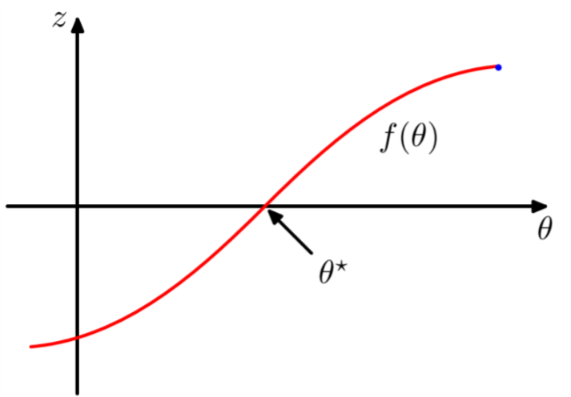

高斯分布的最大似然估计
1 原理
给定一个数据集\(\mathbf{X} = (\mathbf{x}_{1},\ldots ,\mathbf{x}_{N})^{T}\)。假设\(\{\mathbf{x}_{n}\}\)是多变量高斯分布的一个独立的观察。我们可以通过最大似然估计来估计高斯分布的参数。对数似然函数是：
\begin{equation} \label{eq:1} \ln p(\mathbf{X}| \mathbf{\mu}, \mathbf{\Sigma}) = -\frac{ND}{2}\ln(2\pi) - \frac{N}{2}\ln|\mathbf{\Sigma}| - \frac{1}{2}\sum_{n=1}^{N}(\mathbf{x}_{n}- \mathbf{\mu})^{T}\mathbf{\Sigma}^{-1}(\mathbf{x}_{n} - \mathbf{\mu}) \end{equation}对上式化简，我们发现似然函数对数据集合的依赖体现在\(\sum_{n=1}^{N}\mathbf{x}_{n}\)和\(\sum_{n=1}^{N}\mathbf{x}_{n}\mathbf{x}_{n}^{T}\)两个量上。这两个量叫做高斯分布的充分统计量（sufficient statistics）。不同的分布有不同的充分统计量，这个我们用到的时候在详谈，此处不展开。
在式 (\ref{eq:1})中，对\(\mathbf{\mu}\)求导，有：
\begin{equation} \label{eq:2} \frac{\partial }{\partial \mathbf{\mu}}\ln p(\mathbf{X}| \mathbf{\mu}, \mathbf{\Sigma}) = \sum_{n=1}^{N} \sum_{n=1}^{N} \mathbf{\Sigma}^{-1} ( \mathbf{x}_{n} - \mathbf{\mu} ) \end{equation}令上式为零，则我们得到了关于高斯分布均值的最大似然解：
\begin{equation} \label{eq:3} \mathbf{\mu}_{ML} = \frac{1}{N}\sum_{n=1}^{N}\mathbf{x}_{n} \end{equation}显然，这个最大似然解是观测数据集合的均值。
对 (\ref{eq:1})的\(\mathbf{\Sigma}\)求导，有：
\begin{equation} \label{eq:4} \mathbf{\Sigma}_{ML} = \frac{1}{N} \sum_{n=1}^{N} (\mathbf{x}_{n}- \mathbf{\mu}_{ML})(\mathbf{x}_{n} - \mathbf{\mu}_{ML})^{T} \end{equation}式~(\ref{eq:4})中出现了\(\mathbf{\mu}_{ML}\)，这是联合优化\(\mathbf{\mu}\)和\(\mathbf{\Sigma}\)的结果。另外注意到\(\mathbf{\mu}_{ML}\)与\(\mathbf{\Sigma}_{ML}\)无关，所以我们可以先得到\(\mathbf{\mu}_{ML}\)，然后求\(\mathbf{\Sigma}_{ML}\)。
基于\(\mathbf{\mu}_{ML}\)和\(\mathbf{\Sigma}_{ML}\)，我们求高斯分布的期望和方差：
\begin{eqnarray} \label{eq:5} \mathbb{E}[\mathbf{\mu}_{ML}]&=& \mathbf{\mu} \\ \mathbb{E}[\mathbf{\Sigma}_{ML}]&=& \frac{N-1}{N} \mathbf{\Sigma} \end{eqnarray}我们发现最大似然估计的均值等于真实的均值，最大似然估计的方差总是小于真实值，因此这个估计是有偏的（biased）.我们可以定义一个不同的估计：
\begin{equation} \label{eq:6} \tilde{\mathbf{\Sigma}} = \frac{1}{N-1} \sum_{n=1}^{N} (\mathbf{x}_{n}- \mathbf{\mu}_{ML})(\mathbf{x}_{n} - \mathbf{\mu}_{ML})^{T} \end{equation}显然\(\tilde{\mathbf{\Sigma}}\)的期望与\(\mathbf{\Sigma}\)相等。
2 应用
以上讨论高斯分布参数的最大似然估计，这个过程为我们进行序贯估计（sequential estimation）提供了方便。序贯算法允许数据在线处理。所谓在线处理（on-line process）是指一次处理一个数据点然后丢点这个数据点。在线处理的优势是相对于离线处理（off-line）在线处理可以不用一次性保存并处理大量的数据。
考虑式 (\ref{eq:3})，对高斯分布均值的最大似然估计，如果我们把式(\ref{eq:3})写成递推的形式，则有：
\begin{eqnarray} \label{eq:7} \mathbf{\mu}_{ML}^{(N)}&=& \frac{1}{N}\sum_{n=1}^{N}\mathbf{x}_{n} \\ &=& \frac{1}{N}\mathbf{x}_{N} + \frac{1}{N}\sum_{n=1}^{N-1}\mathbf{x}_{n}\\ &=& \frac{1}{N}\mathbf{x}_{N} + \frac{N-1}{N} \mathbf{\mu}_{ML}^{(N-1)} \\ &=& \mathbf{\mu}_{ML}^{(N-1)} + \frac{1}{N}(\mathbf{x}_{N} - \mathbf{\mu}_{ML}^{(N-1)}) \end{eqnarray}这个结果提供了一个递推的求解高斯分布均值的方法。接收到第\(N-1\)个数据之后，我们对\(\mathbf{\mu}\)的估计\(\mathbf{\mu}_{ML}^{(N-1)}\)。我们现在观察到了\(\mathbf{x}_{N}\)，那么我们基于\(\mathbf{x}_{N}\)和\(\mathbf{\mu}_{ML}^{(N-1)}\)得到一个更新的\(\mathbf{\mu}_{ML}^{(N-1)}\)。仔细观察这个结果，我们发现相对于\(\mathbf{\mu}_{ML}^{(N-1)}\)，更新的\(\mathbf{\mu}_{ML}^{(N)}\)在原来的基础上更新了一个很小的量\(\frac{1}{N}(\mathbf{x}_{N} - \mathbf{\mu}_{ML}^{(N-1)})\)。
式 (\ref{eq:7})和式(\ref{eq:3})在本质上是相同的，提供了一种迭代计算均值的方法。但是在实际中我们却较少使用这种方法，我们更general的序贯学习方法。Robbins-Monro算法就是比较general的算法。考虑一对随机变量\(\theta\)和\(z\)，其联合概率分布是\(p(z,\theta)\).那么，给定\(\theta\)求\(z\)的条件期望确定了\(f(\theta)\)：
\begin{equation} \label{eq:8} f(\theta) = \mathbb{E}[z|\theta] = \int zp(z|\theta)\mathrm{d}z \end{equation}式 (\ref{eq:8}) 的结果可以用图1来表示。

图 1: Robbins-Monro算法
通过式~(\ref{eq:8})定义的函数叫做回归函数(regression functions). 定义了式 (\ref{eq:8})之后，我们的目标是找到\(\theta^{*}\)使得\(f(\theta^{*}) = 0\)。对于\(z\)和\(\theta\)，如果我们有一个较大的数据集。我们可以直接获得回归函数，并估计它的零点。
假设我们观测到了\(z\)的一个样本，然后我们期望得到对应的\(\theta^{*}\)的序贯估计。Robbins-Monro提供了一个过程。假设:
\begin{equation} \label{eq:9} \mathbb{E}[(z-f)^{2}|\theta] < \infty \end{equation}另外，不失一般性，我们认为\(f(\theta) > 0, \theta > \theta^{*}\), 且\( f(\theta ) < 0, \theta < \theta^{*} \), 就像图1所示的那样。Robbins=Monro过程定义了估计\(\theta^{*}\)的一个递推式：
\begin{equation} \label{eq:10} \theta^{(N)} = \theta^{(N-1)} + a_{N-1}z(\theta^{(N-1)}) \end{equation}其中\(z(\theta^{(N)})\)是当\(\theta\)取值\(\theta^{(N)}\)时\(z\)的一个观测值。系数\(\{a_{N}\}\)代表一系列正数，满足：
\begin{eqnarray} \label{eq:11} \lim_{N\to \infty} a_{N}&=& 0 \\ \sum_{N=1}^{\infty}a_{N}&=& \infty \\ \sum_{N=1}^{\infty}a_{N}^{2}& < & \infty \end{eqnarray}Robbins和Monro证明了式 (\ref{eq:10})给出序贯估计的确可以以概率1收敛到\(\theta^{*}\)。
现在让我们仔细考虑使用Robbins-Monro算法如何可以让一个广义的最大似然估计问题收敛。我们知道，一句定义最大似然估计解\(\theta_{ML}\)是对数似然函数的一个静态点，满足：
\begin{equation} \label{eq:12} \frac{\partial}{\partial\theta } \bigg\{ \frac{1}{N}\sum_{n=1}^{N}\ln p(\mathbf{x}_{n}|\theta) \bigg\}{\huge{\lvert}}_{\theta_{ML}} = 0 \end{equation}交换积分和求导顺序，令\(N\to \infty\),我们有：
\begin{equation} \label{eq:13} \lim_{N\to \infty}\frac{1}{N}\sum_{n=1}^{N}\frac{\partial}{\partial \theta}\ln p(x_{n}|\theta) = \mathbb{E}[\frac{\partial}{\partial \theta} \ln p(x|\theta)] \end{equation}因此我们看到找到最大似然解相当于找到回归函数的根。